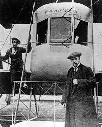
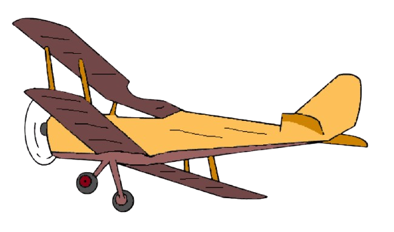
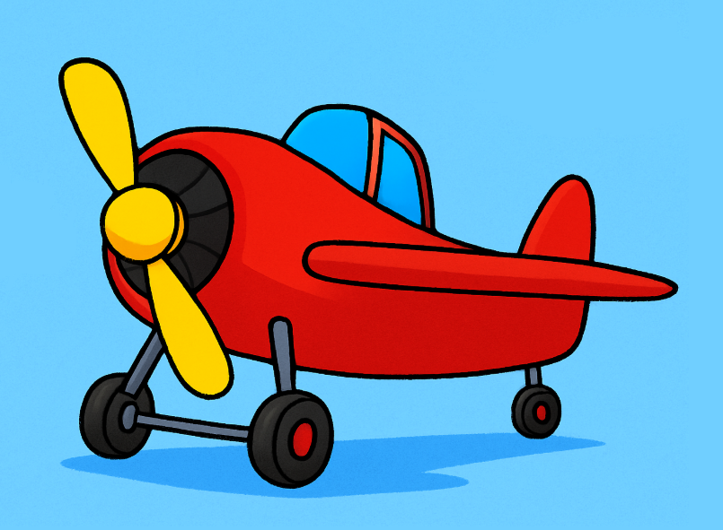
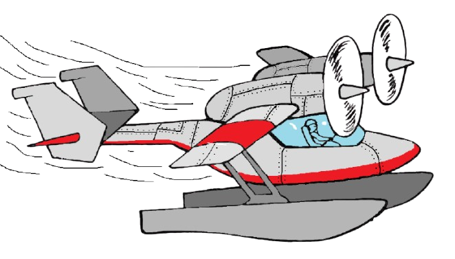
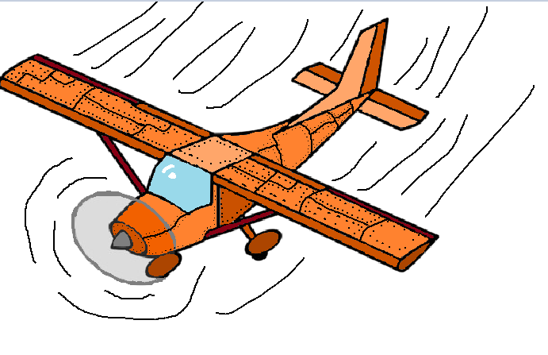

«Кожен літак — це здійснена мрія, закріплена в металі й небі.»

Роль літаків у творчості Сікорського
Ще на початку ХХ століття Ігор Сікорський почав будувати власні літаки, експериментуючи з конструкціями та матеріалами. Його перші апарати були невеликими, але саме вони дали початок майбутнім проривам.
Одним із найбільш відомих став «Ілля Муромець» — перший у світі багатомоторний літак, який здатен був перевозити екіпаж і пасажирів на значні відстані. Це стало початком нової епохи в авіабудуванні.
Ілюстрації літаків Сікорського



